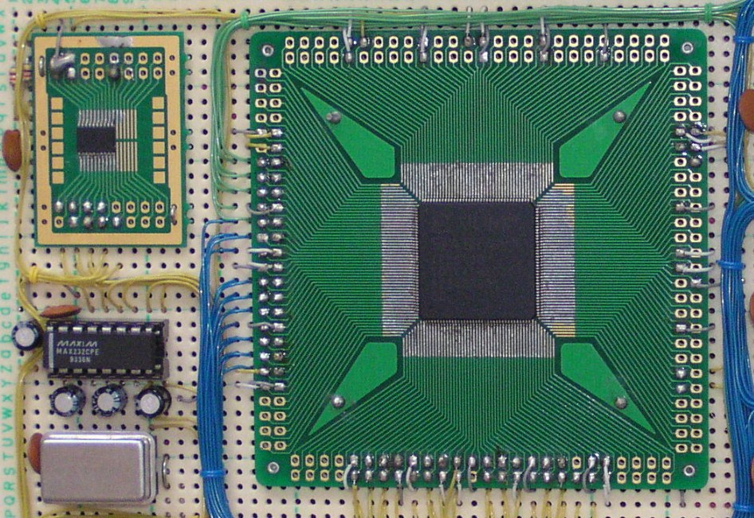

デバイス
アマチュアのよく利用する電子工作の通販店で入手できるデバイスはCPLD で
表1.3
のものとFPGA で
表1.1
のものと
表1.2
のものがあります。PLD の代表的なメーカは
アルテラ
や
ザイリンクス
などですが表中に掲
載したメーカはCPLD でもFPGA でもザイリンクスがほとんどです。書き込み器はメーカごとですがメーカ
が同じならCPLD にもFPGA にもコンフィギュレーションROM にも同じ書き込み器で書き込めます。表中
にあげたデバイスはメーカがWEB で提供している無償の開発ツールでチップデータを作ることができます。
デバイスの選択項目としては次のようなものがあります。
- 利用できるパッケージか
- 利用できる電源電圧と入力電圧に合うか
- 端子数は足りているか
- 設計した論理が収まる容量か
他に低消費電力かどうか速度が速いかどうかなどがあると思い
ます。単体で入手できるデバイスのマクロセルは5000 程度で
すがそれ以上の容量を求めるときには
図1.5
のようなPLD の
ブレッドボードのメーカの製品があります。
図1.6
のような
フラットパッケージを変換基板に装着する手間が省けてメー
カのサポートも受けられますし書き込み器なども取り扱い製品
に入っていますからPLD の導入を安心して行いたい人にはお
勧めします。さらに高容量のデバイスを求める場合にはBGA
パッケージなどになって個人的な工作で対処できる範囲を超えるのでブレッドボードがほぼ唯一の選択肢になり
ます。
開発ツール
図1.6 自作FPGA 基板
|

|
|
表1.1
のXC2S100-5TQ144C と
XCF01SV020C を使った基板です。
|
PLD を利用するときにチップデータを作るのが開発ツールです。
デバイスへの書き込みはJTAG 方式などを使えば必ずしもメーカの
開発ツールでなくても行えるようですがチップデータの作成はメー
カの開発ツールでしか行えません。マイコンならば命令コードが公
開されているのでそれを基に実行コードを作ることができますPLD
もPAL やGAL の時代には構造が簡単だったのと情報が知られてい
たので論理式からチップデータを手作りもしていたようですしマイ
コンで言うところのアセンブラのようなものを自作する人もあった
のですが現在のPLD ではそのようなことは行われておらずメーカ
の開発ツールのみが頼みです。そのメーカの開発ツールはWEB か
ら無償のものを登録することでライセンスと共に入手できます、ライセンスには期限が付いている場合もありま
すがほかの試用版のソフトウェアのように1 回だけ試用を許されるような形態のもではなく何回でもダウンロー
ドしてインストールができます。これでVHDL またはVerilog 言語のソースをコンパイルして端子の割付を行
いチップデータを作ってデバイスに書き込むまでが行えます。
|